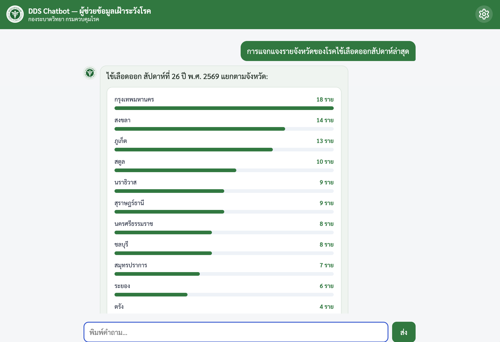

Public Health LLM
DDS Chatbot
Guardrailed Thai disease-surveillance LLM assistant for DDC, using tool-calling over an aggregate, PII-free data mart — built to give surveillance staff safe self-service query access without exposing raw case-level records.